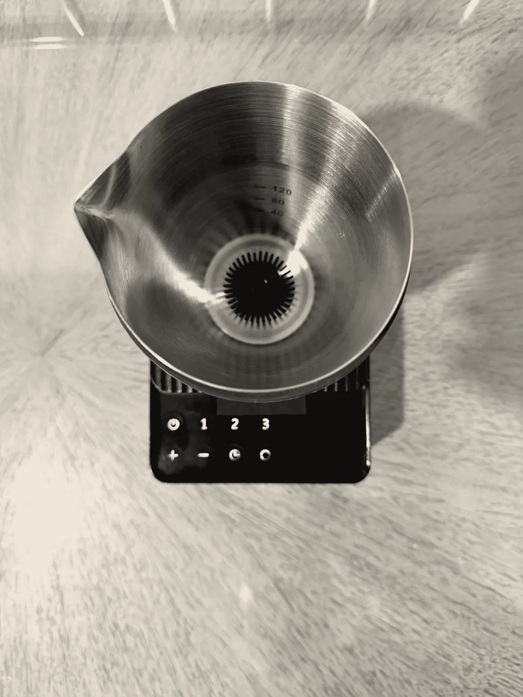

The chasen’s hand, made constant.
Eight hundred years of technique, held to one standard: an 18-speed vortex traces the whisk-stroke faster and steadier than any wrist. Fine, even foam in thirty seconds — the same bowl, every time.

Direction B — “Sumi” · Shippori Mincho + Zen Kaku Gothic · ink / paper / vermilion